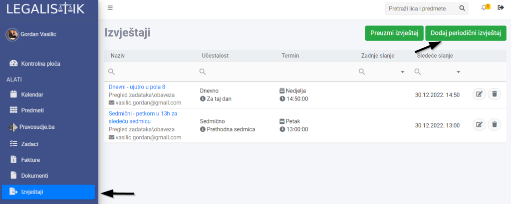
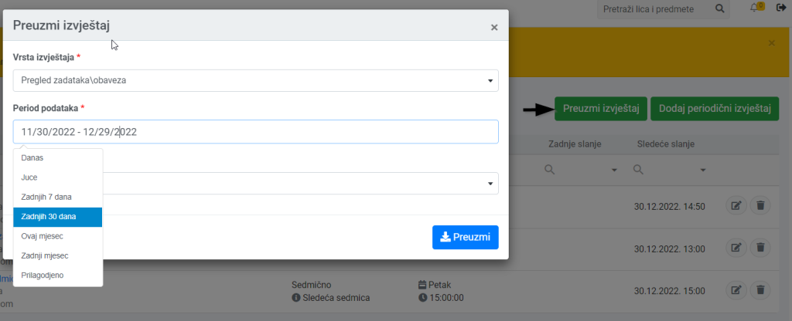

Ako želite da svako jutro dobijete listu zadataka za taj dan na email adresu, ili želite odštampati sve obaveze za sledeću sedmicu, onda ćete cijeniti alat Izvještaji unutar Legalistik aplikacije.
Periodični email izvještaji #
Svi izvještaji koji se mogu generisati, nalaze se na linku Izvještaji, u meniju na lijevoj strani. Nakon otvaranja, prikazana je lista trenutno aktivnih izvještaja.
Novi izvještaj generišemo klikom na dugme “Dodaj periodični izvještaj”:

Pored naziva izvještaja, potrebno je popuniti sledeća polja:
- Vrsta izvještaja – lista mogućih izvještaja koja će se vremenom povećavati
- Ponavljanje, Dan, Vrijeme – izaberite vrijeme kad želite primati izvještaj
- Period podataka – za koji period želite podatke u izvještaju
- Format dokumenta – izaberite PDF za štampu ili Excel format za mogućnost uređivanja izvještaja
- Email primaoca – unesite email adrese na koje će se izvještaj slati

Preuzmite odmah izvještaj #
Ako želite odmah napraviti izvještaj potrebno je da kliknete na dugme “Preuzmi izvještaj”, izaberete vrstu izvještaja i period za koji želite podatke:

Primjer Excel dokumenta izgleda ovako: